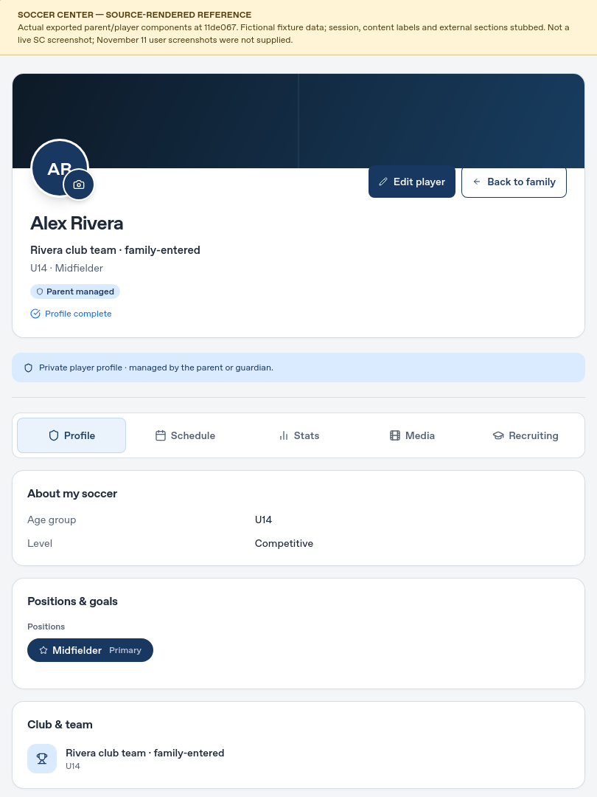

Left: read-only SC exported components with fixtures. Right: actual AP application captured in WebKit. November 11 user screenshots were not attached; this is not a live-SC comparison.
Soccer Center — source-rendered referenceCommit 11de067 · unchanged exported athlete component · fixture session/data and reconstructed content labels

Arena Pathway — actual applicationExisting browser-local IDs and records · AP branding · WebKit · same iPad viewport